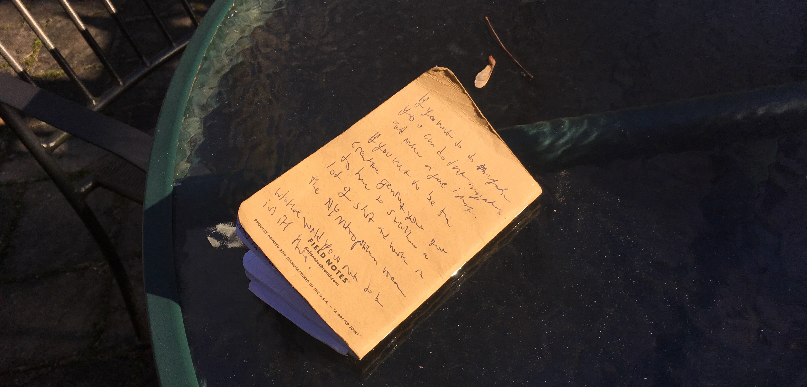

Grounded Fortune Cookies
10/10/19
A casual interview with Paul Choate,
founder of Foun and Maker Anonymous,
who now creates retail displays for David Yerman.
We met up at Canal Street Market and headed to the David Yerman store, where he designs all the displays, talking along the way about CNC machines and the chaos of the city. I’m very unfamiliar with the place and almost walked into traffic. In the store he showed me some mirrored acrylic sheets that had been insufficiently bent and we talked about the trouble with manipulating mirrored acrylic, and with having things manufactured on very tight schedules. He explained that pop-up shops and other quickly manufactured experiences are feeding local American manufacturing, as close proximity is the only way to get the necessary turnaround times. This was interesting to me; local manufacturing is also a good way to better ensure ethical conditions. We then left the store and headed to a nearby bar where I got into the questions.
1. Where did you go to school?
2. What got you into Industrial Design?
Paul Choate went to RISD, began as a painting major, and in his own words, “burned out”. Still wanting to work with his hands, he sought another major. “Industrial Designers don’t actually see projects start to finish,” he says. “Furniture Designers still make the whole thing.” Furniture Design it was.
3. How many years did you go to school?
He didn’t answer this one directly, but in my understanding the change of major kept him there longer than he would have been. (Winding up with a furniture design degree sounds worth the extra time to me; loving furniture I have some bias here.) He also got an MBA.
4. Why did you choose to go to business school after majoring in Furniture Design?
He says that it was because he “wanted to be the guy in charge”, but revealed that graduating from college right around the 2008 recession was a factor in a lot of his decisions around the time.
5. What is it like to be independent and work for yourself?
“It sucks”, he says first, but he also didn’t fully caution against it. He suggests “working for as many people as you can, and saving money”, citing the “learning curve” of working for yourself and the overhead as obstacles to successfully working for yourself as a designer in NYC.
6. Did you have an internship?
Paul’s internship was for BDDW. He describes BDDW’s founder as a sort of larger than life character, which fascinates me. I’d love to meet him. Throughout the interview Paul Choate was listing names of people I now want to meet, as I speedily scrawled them in my Field Notes. He notes that one of the things that can be overlooked that BDDW did right was to make good real estate decisions, and with the overhead in NYC being such a factor all the time, that sounds very believable.
7. What was your first job out of college?
His first job out of college was for Hellman and Chang, who he describes as “a music guy and a marketing guy”.
8. What other jobs have you had in design?
He worked for Patrick Townsend “He’s amazing” he says. Townsend Design is a furniture and lighting studio with a focus on millwork and the latest fabrication technology. This prompted a conversation about the rebranding of “digital fabrication” Digital fabrication was just computer aided manufacturing until someone began branding it as something trendier and higher end. Personally having had both the small machine shop and flashy makerspace experiences, and seeing how people react to similar purposes branded so differently, this was a relatable thought. If you tell people that something (that may already have been around for some time) is special, they will usually believe it, which is good and bad.
9. How many years did it take for you to develop as a designer right after college?
“I’m still working on it. It’s been a decade at least,” he says, but you “can’t quantify” it either. At the same time that he’s been working for other people, he’s been staying up late doing personal projects. “I feel like I’m getting closer, but there’s no way to know.”
10. What is your schedule like?
“A nightmare,” he says, “think about it, two full time jobs: day job and side hustle.” He explains that it’s important to find balance, and meet the right people. As nightmarish as his schedule is, he emphatically says “I can’t see myself doing anything else.” He also says “it’s not what you do it’s who you work for.”, and recommends finding both the kind of work you like and people you like as a way of achieving balance in life.
11. Does your schedule react to bursts of inspiration?
“My mantra is the same as Chuck Close,” he explains: “Amateurs look for inspiration.” He goes on to say that “there is no shortcut to the top”. I’m glad to hear this; my schedule doesn’t react to bursts of inspiration either. It’s not a predictable way to work.
12. How do you network?
“In bars over beer”, he says to me in a bar, over a beer. He explains that everywhere you go is a chance to network, and “all Industrial Designers are hustlers.”
We talked some more about the field, and the city. He says Industrial Design is putting “90% of your effort into what customers don’t see.”
There’s irony but also purity in that idea.
I’m at a place where I’m deciding what part of Industrial Design to go for, and I’m becoming less uncomfortable in NYC.
He tells me “If you want to do manufacturing, you can do that anywhere, and make good money. If you want to be the creative genius, you’re going to have to swallow a lot of shit and work in the NY metropolitan area.”
At this point, we’d finished our beers and he told me to dream big. I caught a subway and began to do a lot of thinking about what’s out there.
© CAW 2019